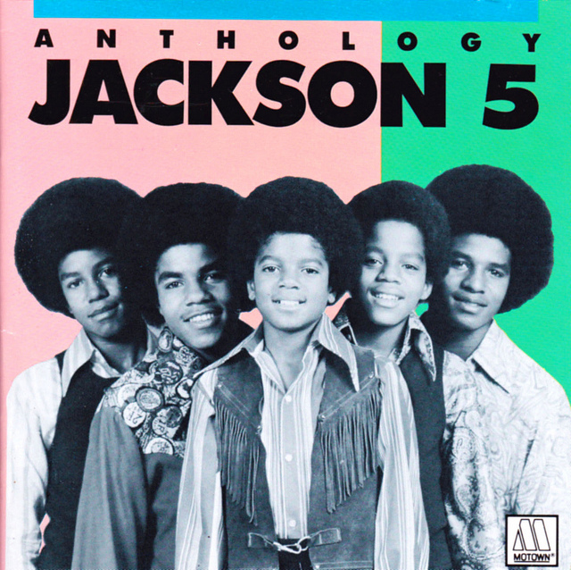
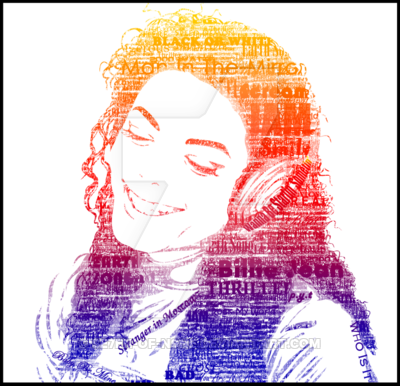

Born in 1958 in Gary, Indiana, Michael Jackson became the lead singer of his family's popular Motown group, the Jackson 5. He went on to a solo career of astonishing success, delivering No. 1 hits from the albums Off the Wall, Thriller and Bad. The "King of Pop" was dogged by allegations of child molestation in his later years, and died just before launching a comeback tour in 2009.
Early Life
Michael Joseph Jackson was born on August 29, 1958, in Gary, Indiana, to a large African-American working-class family. His mother, Katherine Jackson, was a homemaker and a devout Jehovah's Witness. His father, Joseph Jackson, had been a guitarist who put aside his musical aspirations to provide for his family as a crane operator. Believing his sons had talent, he molded them into a musical group in the early 1960s.
At first, the Jackson Family performers consisted of Michael's older brothers, Tito, Jermaine and Jackie. Michael joined his siblings when he was 5 years old, and emerged as the group's lead vocalist.

He showed remarkable range and depth for such a young performer, impressing audiences with his ability to convey complex emotions. Older brother Marlon also became a member of the group, which evolved into the Jackson 5.
Behind the scenes, Joseph Jackson pushed his sons to succeed. He was also reportedly known to become violent with them. Michael and his brothers spent endless hours rehearsing and polishing up their act. At first, the Jackson 5 played local gigs and built a strong following. They recorded one single on their own, "Big Boy," with the B-side "You've Changed," but the record failed to generate much interest.
The Jackson 5 moved on to working as the opening act for such R&B artists as Gladys Knight and the Pips, James Brown, and Sam and Dave. Many of these performers were signed to the legendary Motown record label, and the Jackson 5 eventually caught the attention of Motown founder Berry Gordy. Impressed by the group, Gordy signed them to his label in early 1969.
Michael and his brothers moved to Los Angeles, where they lived with Gordy and with Diana Ross of the Supremes as they got settled. The Jackson 5 was introduced to the music industry at a special event in August 1969, and the group later opened for the Supremes. Their first album, Diana Ross Presents the Jackson 5, hit the charts in December 1969, with its single, "I Want You Back," reaching No. 1 on the Billboard Hot 100 chart shortly afterward. More chart-topping singles quickly followed, such as "ABC," "The Love You Save" and "I'll Be There."
Solo Career
At the age of 13, Jackson launched a solo career in addition to his work with the Jackson 5. He made the charts in 1971 with "Got to Be There," from the album of the same name. His 1972 album, Ben, featured the eponymous ballad about a rat. The song became Jackson's first solo No. 1 single.
For several years, Michael Jackson and the Jackson 5 maintained a busy tour and recording schedule, under the supervision of Berry Gordy and his Motown staff. The group became so popular, they even had their own self-titled cartoon show, which ran from 1971 to 1972.
Despite Jackson's individual achievements and the group's great success, there was trouble brewing behind the scenes.

Tensions mounted between Gordy and Joseph Jackson over the management of his children's careers, with the Jacksons wanting more creative control over their material. The group officially severed ties with Motown in 1976, though Jermaine Jackson remained with the label to pursue his solo career.
Now calling themselves the Jacksons, the group signed a new recording deal with Epic Records. By the release of their third album for the label, 1978's Destiny, the brothers had emerged as talented songwriters. Michael then wowed the music world with his next solo album, 1979's Off the Wall. An infectious blend of pop and funk, the album featured the Grammy Award-winning single "Don't Stop 'Til You Get Enough," along with such hits as "Rock with You," "She's Out of My Life" and the title track. The overwhelmingly positive response to Off the Wall also helped the Jacksons as a group. Triumph (1980) sold more than 1 million copies, and the brothers went on an extensive tour to support the recording. However, Michael continued exploring more ways to branch out on his own. He teamed up with rock legend Paul McCartney for their 1982 duet, "The Girl Is Mine," which nearly reached the top of the pop charts.
The song also appeared on his next solo album, Thriller (1982), which generated seven Top 10 hits and became the best-selling album in history. On a 1983 television special honoring Motown, Jackson performed his No. 1 hit "Billie Jean" and debuted his soon-to-be-famous dance move, the Moonwalk. Jackson, a veteran performer by this time, created this step himself and choreographed the dance sequences for the video of the album's other No. 1 hit, "Beat It." Jackson's most elaborate music video, however, was for the album's title track. John Landis directed the horror-tinged video, which featured complex dance scenes, special effects and a voice-over by actor Vincent Price. The "Thriller" video was an immense success, boosting sales for the already successful record. The album stayed on the charts for 80 weeks, holding the No. 1 spot for 37 weeks. In addition to its unparalleled commercial achievements, Thriller garnered 12 Grammy Award nominations and notched eight wins, both records.
Jackson's victories showcased the diverse nature of his work. For his songwriting talents, he earned a Grammy (best rhythm and blues song) for "Billie Jean." He also was honored for the singles "Thriller" (best pop vocal performance, male) and "Beat It" (best rock vocal performance, male). With co-producer Quincy Jones, Jackson shared the award for album of the year.
Death
Sadly, Michael Jackson would never get to experience the anticipated success of his comeback tour. On June 25, 2009, Jackson suffered cardiac arrest in his Los Angeles home. He was rushed to the hospital after his heart stopped and CPR attempts failed, and died later that morning. He was 50 years old.
News of Jackson's death resulted in an outpouring of public grief and sympathy. Memorials to Jackson were erected around the world, including one at the arena where he was set to perform and another at his childhood home in Gary, Indiana. On July 7, 2009, a televised memorial was held for fans of the "King of Pop" at the Staples Center in downtown Los Angeles. While 17,500 free tickets were issued to fans via lottery, an estimated 1 billion viewers watched the memorial on TV or online.
The Jackson family held a private funeral on September 3, 2009, at the Forest Lawn Memorial Park in Glendale, California, for immediate family members and 200 guests. Celebrity mourners included Jackson's ex-wife, Lisa Marie Presley, and actress Elizabeth Taylor.
As dictated in his will, Jackson's children were placed in the care of their grandmother, Katherine Jackson. In respect to their father's wishes, Prince, Paris and Blanket were largely kept out of the limelight. They stepped up to the mic in 2009 to speak to fans at their father's funeral, and again in January 2010 to accept a posthumous Lifetime Achievement Award for their father at the Grammys.
A documentary of Jackson's preparations for his final tour, entitled This Is It, was released in October 2009. The film, which features a compilation of interviews, rehearsals and backstage footage of its star, made $23 million in its opening weekend and skyrocketed to No. 1 at the box office. This Is It would go on to make $261 million worldwide, becoming the highest grossing concert film of all time.
In December 2010, the posthumous album Michael was released amid controversy about whether the singer actually performed some of the tracks. Brother Randy was among those who questioned the authenticity of the recordings, but the Jackson estate later refuted the claims, according to The New York Times.
Another posthumous album, Xscape, was released in May 2014. R&B star and Jackson protege Usher performed its first single, "Love Never Felt So Good," that month at the iHeartRadio Music Awards. The album, which includes eight songs recorded by Jackson between 1983 and 1999, debuted at No. 2 on Billboard's Top 200 Album chart.